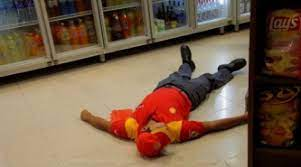
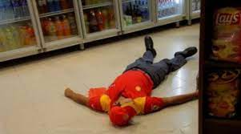

Somos una estación de servicio que cuenta con una trayectoria de mas de 30 años.Nos orgullecemos en decir que nos dedicamos al negocio de provver la mejor calidad en bienes y servicios para todo el litoral. Contamos con los mejores precios en aceites y combustibles, además de poseer diversos servicios automovilisticos a dispocisión del público.
Nuestra sucursal esta administrada por una empresa denominada P&H S.R.L., la cual se dedica a administrar varias estaciones de servicios en la región del NEA.
Constantemente cooperamos con la policia de la ciudad de Resistencia para simulacros de robos, los cuales benefician no solo a nuestros clientes e empleados para preparar a nuestros obreros ante las situaciones peligrosas. Además de ayudar a instruir al efectivo policial en su deber.
 
